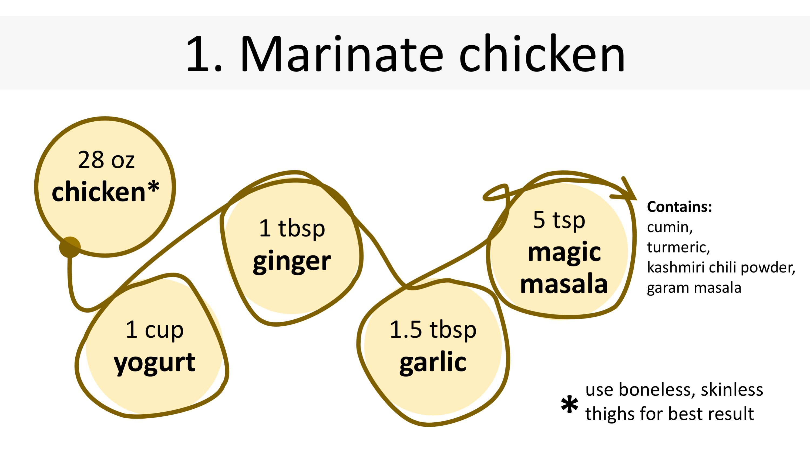
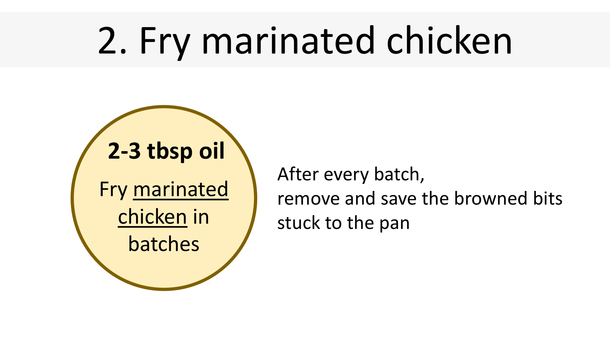
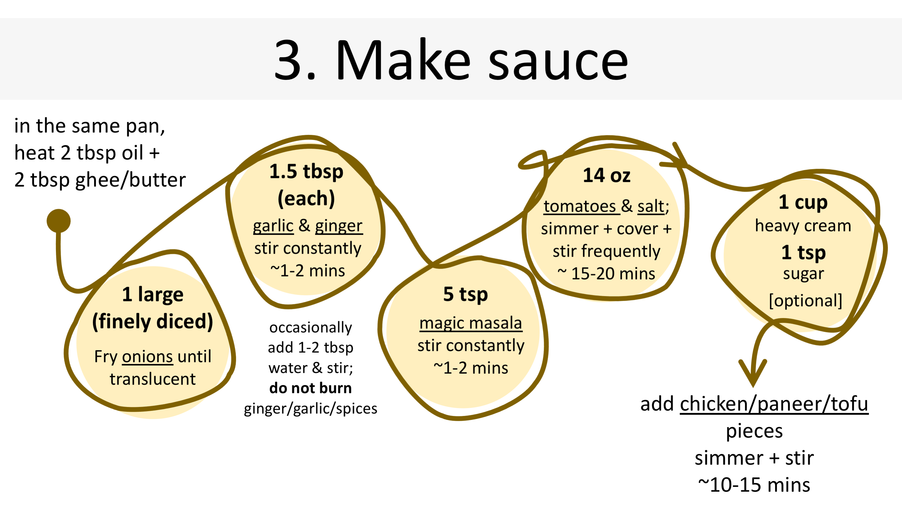

If vegetarian, fry some Paneer or Tofu lightly coated in the magic masala, and keep aside.
In a bowl, combine chicken with all of the ingredients for the marinade; let marinate for 10 minutes to an hour (or overnight if time allows).
2.1 | Heat 2-3 tablespoons of oil in a large skillet over medium-high heat.
2.2 | When sizzling, add chicken pieces in batches, making sure not to crowd the pan.
2.3 | Fry until browned, approximately 3-5 minutes on each side.
2.4 | Set aside, remove and save browned bits stuck to the pan.
2.5 | Repeat steps 2.1 to 2.4.
Finely dicing onions and tomatoes are recommended for a smooth-ish texture of the sauce.
3.1 | Melt 2 tbsp butter in the same pan (if possible) in which chicken was shallow fried.
3.2 | Fry onions until soft and translucent, while scraping up any browned bits stuck on the bottom of the pan.
3.3 | Add 1.5 tbsp garlic and ginger paste, each, and sauté for 1 minute until fragrant.
3.4 | Add 5 tsp Magic Masala; fry for about 20 seconds until fragrant, while stirring occasionally.
3.5 | Add tomatoes and 1 tsp salt; cover and simmer for about 15-20 minutes on low-medium heat, stirring occasionally until sauce thickens and becomes a deep brown red colour.
3.6 | [Optional] Stir 1 cup heavy cream (half and half works as well) and 1 tsp sugar through the sauce.
3.7 | Add chicken (or paneer/tofu) and burned bits back into the pan; mix well and cook for an additional 10-15 minutes at low-medium heat until chicken is cooked and the sauce is thick and bubbling. Stir occasionally (~5 mins).
3.8 | Pour in 0.5 cup of water to thin out the sauce. Add more water if needed (adjust consistency to your liking).
3.9 | Taste sauce, and adjust salt/sugar if needed. That’s it; now, enjoy with rice/naan/tortilla and cucumbers :)